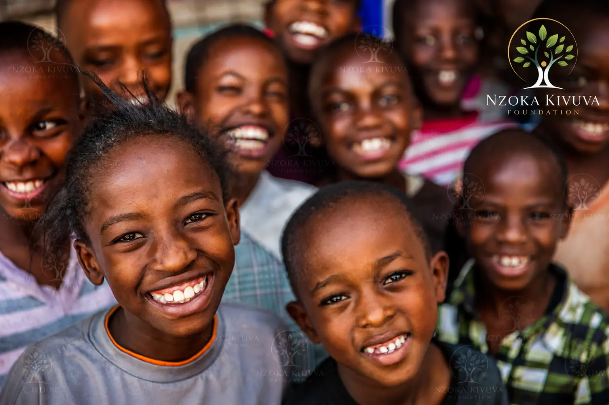

The Nzoka Kivuva Foundation, in collaboration with the Machakos County Sports Office, hosted the annual Machakos Inter-School Sports Gala at the Mwala Stadium. The event brought together over 500 students from 24 schools across the county for a day of spirited competition in football, volleyball, and athletics.
The gala, now in its third year, has become a cornerstone of youth engagement in Machakos County, providing a platform for young athletes to showcase their talent, build character, and foster unity among communities.

A Day of Talent and Teamwork
The gala featured competitions in three sports categories:
- Football: Boys' and girls' tournaments with 16 teams competing
- Volleyball: 12 teams showcasing skill and teamwork
- Athletics: Track and field events including sprints, relays, and long jump
"Events like these build bridges between our communities. When young people come together to compete, they learn respect, discipline, and the value of teamwork — lessons that stay with them for life."
Building Unity Through Sports
The gala was more than just a competition — it was a celebration of unity. Students from different schools, backgrounds, and communities came together, sharing moments of triumph and camaraderie. The event was a powerful reminder of how sports can bridge social divides and foster national cohesion.
"Sports has a unique ability to bring people together," said Advocate Nzoka Kivuva, Executive Director of the foundation. "When young people from different schools compete side by side, they build relationships that transcend their differences. That's the kind of unity we need in our communities."
.jpeg)

Winners and Champions
After a day of intense competition, the following schools emerged as champions:
- Football (Boys): Wote Secondary School
- Football (Girls): Makindu Girls' High School
- Volleyball: Kibwezi Technical School
- Overall Athletics: Kathonzweni High School
Looking Ahead
Building on the success of this year's gala, the foundation plans to expand the event to include more schools and additional sports in 2027. The goal is to make the Inter-School Sports Gala a flagship event for youth sports in Machakos County, inspiring a new generation of athletes and leaders.
"We're already planning for next year," said a foundation spokesperson. "We want to double the number of participating schools and introduce new sports like basketball and rugby. The enthusiasm we've seen today tells us that the demand is there."
Help Us Grow Youth Sports in Machakos
KSh 1,000 provides sports equipment for a school team. Join us in creating more opportunities for young athletes across the county.
.jpeg)